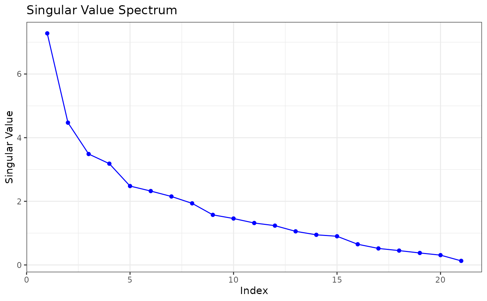
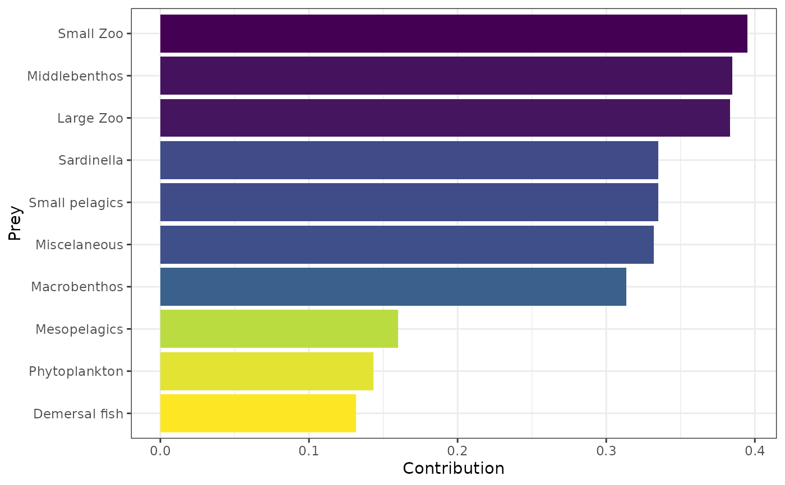
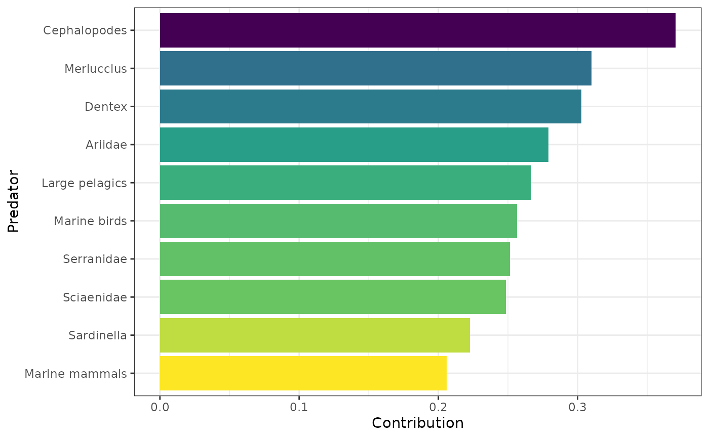

Singular Value Decomposition (SVD) Analysis of Networks
Source:R/svdcentrality.R
calc_svd_entropy_importance.RdThis function performs Singular Value Decomposition (SVD) on a network adjacency matrix. It computes species importance based on the dominant singular values and returns entropy, rank, and key visualizations.
Value
A list containing:
- Rank
The numerical rank of the matrix after small values are rounded for numerical stability.
- Entropy
The entropy of the singular value distribution.
- Prey_Importance
A data frame ranking prey species by their contribution to the largest singular value.
- Predator_Importance
A data frame ranking predator species by their contribution to the largest singular value.
- Singular_Values
A numeric vector of the singular values of the matrix.
- Plot_Singular_Values
A ggplot object showing the distribution of singular values.
- Plot_Prey_Importance
A ggplot object showing the top prey species contributing to the largest singular value.
- Plot_Predator_Importance
A ggplot object showing the top predator species contributing to the largest singular value.
See also
calc_svd_entropy for a lighter version returning only entropy and rank.
Examples
results <- calc_svd_entropy_importance(netData[[1]])
#> Warning: The `<scale>` argument of `guides()` cannot be `FALSE`. Use "none" instead as
#> of ggplot2 3.3.4.
#> ℹ The deprecated feature was likely used in the multiweb package.
#> Please report the issue at <https://github.com/lsaravia/multiweb/issues>.
print(results$Rank)
#> [1] 21
print(results$Entropy)
#> [1] 0.8862512
print(results$Plot_Singular_Values)

print(results$Plot_Prey_Importance)

print(results$Plot_Predator_Importance)
